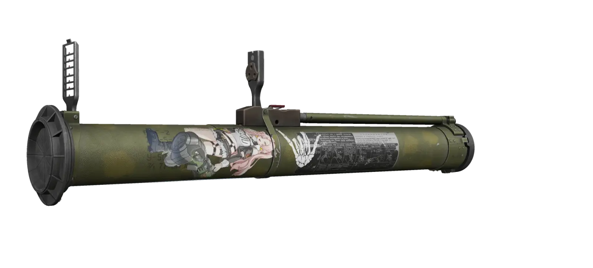

Spirit's Embroidery
- Downloads
- 5,021
Features Stickers varying from Morale patches, Real Squadron Patches, video-game factions and other stuff I find on my computer.
GUIDE:
Drag and copy the file after using 7zip to extract onto BepInEx.
Please do not expect frequent updates. I will take comments, but since this is my first mod, I’m not fully dedicating to modmaking, this is just something I want to share.
EXAMPLES OF STICKERS ON GUNS

Version
1.0.6
Updated to 1.0.6!
Final version for now, enjoy this as I take a long break.
NEW STICKERS!
Female Black Division Operative, USEC Female Operative, a BEAR Female Operative and a female Scav Sniper.
Added Tactical Operatives of Female Operators varying gear and weaponry.
MOORE HORSE GIRLS!!!!!!!!
Added More Gold Ship stickers. Added a Agnes Tachyon Sticker with a soldier and an Altyn, which totals up to;
40 UMAMUSUME STICKERS IN THIS ADDON.
bro.
Added 7 stickers, ranging of FOG Stickers, Morale and straight up larp stickers.
Added a Kalshi bet that you can put on your gun that decides whether you will decide on living or dying in the raid.
Added a Cag Maxwell the cat.
Version
1.0.5
Updated to 1.0.5!
What a milestone. ^^
NEW STICKERS!
Escape From THE CITY stickers, Including Female Black Division Operatives, USEC Female Operatives and a “BEAR or USEC” Stickers.
Added Real stickers and patches, including the MARSOC Chan, Delta Safari, and the Osaka “America Ya” Patch.
MOORE HORSE GIRLS!!!!!!!!
Added Mayano Top Gun, a Second Goldship Tactical Sticker, a Manhattan Cafe Pax Armata Sticker, A Meisho Doto “Umazing” sticker, Haru Urara “Can You Lock In” and a Taiki Shuttle Nu Metal pose. (or limp bizkit, whatever you prefer to call it)
Added two morale stickers, the “Skill to Kill” and “AWM Reaper”.
Added a Cag caracal cat.
Version
1.0.4
Updated to 1.0.4!
After some time, I have finally been able to update this addon pack. Due to the work I had while making this sticker pack, it was hard to actually focus more on it, doing a hybrid of college and modmaking. Now with college out of the way, i can fully put my time into this modpack.
NEW STICKERS
Looping Umamusume Stickers in WEBM for 7b’s new update
Added miscellaneous stickers like a Alien glorp slamming it’s desk and a Ranger C-Walking.
Version
1.0.3
Updated to 1.0.3!
Sorry, I had a large hiatus with it as I recently had a mental health problem. I’m feeling better now and I noticed this addon has passed 500 downloads, so I wanted to push something special!
NEW STICKERS!
Added Canadian Culture, ranging from food brand logos, tactical gear companies, Badges of the military, album covers. sport teams, and clothing brands.
Added American Culture, featuring tactical companies, army regiment patches, the American Flag, Badges of the military in the United States, food brand logos.
MORE UMAMUSUME STICKERS!!
USA/Canada Flag.
Version
1.0.2
Updated to 1.0.2
NEW STICKERS:
Added Cyberpunk 2077 Company logos,
Added the usual cag stickers,
Added THE CITY related memes,
Added a Peepo Blackbeard sticker (I forgot one sticker in this version and I will upload it next update) and a father and son.
Added The Division’s Last Man Battalion Logo, The Hunter Logo and the Rogue Division Agent logo.
Added two Zenless Zone Zero patches with guns. Nobody asked for it, but its better to have them and just not ask.
Version
1.0.1
Updated Version to 1.0.1
NEW STICKERS:
Added a bunch of Umamusume Stickers due to high demand by cagsters.
Added Canadian Armed Forces patches and various other groups in Canada.
Version
1.0.0
Initial Release.